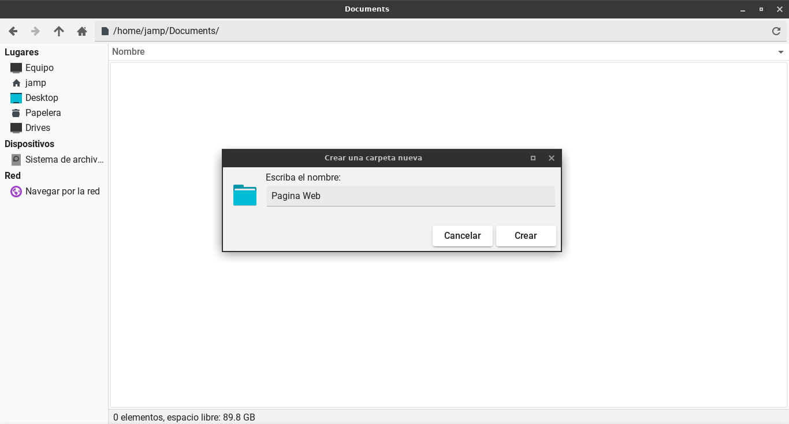
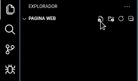

¿Qué herramienta se necesita?.
En primer lugar tenemos que tener una herramienta que nos ayude a poder crear nuestra página, si bien es
cierto que el block de notas sirve como editor de texto este no es lo suficientemente práctico como lo
es el Visual Studio Code, esta herramienta tiene una capacidad ilimitada para la creación de páginas
web(Click en la imagen para descargar) .

¿Qué utilizaremos?
Utilizaremos el Lenguaje de Marcado de Hipertexto (HTML) siendo el código que se
utiliza para estructurar y desplegar una página web y sus contenidos, de igual manera darle una vista al
usuario con CSS (Estilo de Hojas de Cascada) lenguaje para la composición
y estructuración de páginas web.
(Click en la imagen para más información) .
PASO 1: CREAR UNA CARPETA EN NUESTRA PC
Creamos una carpeta para almacenar nuestros archivos, tanto Windows como Linux tienen el soporte para
ello, en este caso se trabajo con Linux.

PASO 2: ABRIMOS EL VISUAL STUDIO CODE E INSTALAMOS LA EXTENSION "LIVE SERVER"
En la barra de iconos seleccionar el icono con forma de pieza de rompecabezas y en la barra de búsqueda
colocar live server e instalar, esta extensión nos ayudará a ver nuestra página en tiempo real a la hora
de su creación.
PASO 3: ABRIR LA CARPETA QUE SE CREO
Buscamos la carpeta creada en nuestra pc y abrirla.
PASO 4: CREAMOS LOS ARCHIVOS HTML Y CSS
Como se mencionó antes utilizaremos html y css, html desde un punto de vista entendible es todo el
interior del cuerpo, mientras el css es el estilo del exterior de este cuerpo, es fundamentalmente
importante llamar index.html al primer archivo que se crea, ya que el servidor donde se subirá
identificara a este como la página inicial de nuestro sitio web y al estilo siempre con su extensión
style.css para que sea reconocida.

PASO 5: CREAR LA ESTRUCTURA HTML EN INDEX
La estructura básica de una página web es la que tiene que ir en la parte inicial en todo archivo con
extensión .html en este caso el programa de Visual Studio Code nos brinda una
forma sencilla de hacerlo tan solo ingresando un signo de admiración, !, seleccionando
la primera opción.
PASO 6: AGREGAMOS LINK DE CSS
El link de .css es el que hace el llamado al archivo con esa extensión para que se puedan ver
los estilos que se hagan en nuestra página y al igual que en el anterior paso el Visual Studio Code nos
da la facilidad de poder agregar estos fragmentos de código, en este caso agregando la palabra
link.
PASO 7: CREAMOS NUESTRA PAGINA WEB
Los códigos a continuación son la representación de una página web básica con una estructura que se
explicará adelante.